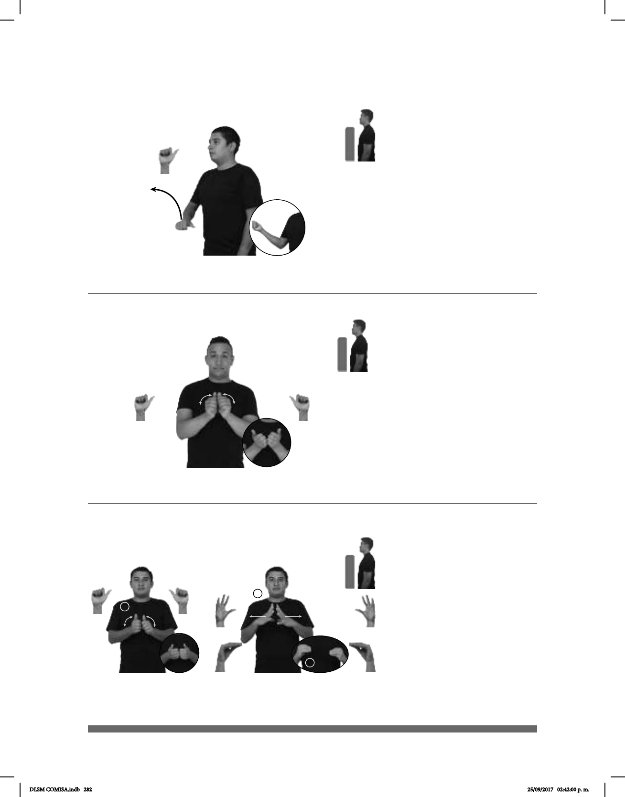

282
1
2
3
Seña: SM
A.1
La palma inicia hacia
abajo y termina hacia arriba.
A la altura del
abdomen.
El brazo se mueve
formando un arco hacia la derecha.
adj. Dicho de una
persona o de una cosa: Distinta de
aquella de que se habla.
Seña: SS
A.1
Las palmas se encuentran
frente a frente.
A la altura del pecho.
Las manos parten de un
mismo punto y luego se abren hacia
abajo y hacia los lados sin despegarse
completamente.
sust. m. Alimento
hecho principalmente de harina de trigo
amasada con agua y levadura que se
cuece al horno en piezas de diversas
formas y tamaños.
Seña: SC: I. y II. SS
I. A.1; II. Seña que pasa de
5.2 a O.9
I. y II. Las palmas se encuentran
frente a frente.
I. y II. A la altura del pecho.
I. Las manos parten de un mismo
punto y luego se abren hacia abajo y hacia los
lados sin despegarse completamente. II. Las
manos parten de un mismo punto y luego se
abren hacia los lados.
sust. m. Pan salado de trigo, cuya
forma asemeja dos conos contrapuestos por sus
bases, que tiene una hendidura rematada por
una ceja a lo largo de su parte anterior y
termina en dos tetillas en sus extremos; es
suave y esponjoso por dentro y quebradizo en
su corteza.
(A-148)
(A-149) Pan
(A-150)
OTRO LIBRO pro-YO TENER
Tengo otro libro.
PAN pro-TÚ IR COMPRAR.
Ve a comprar pan.
PAN BOLILLO pro-TÚ COMPRAR
Compra pan bolillo.
DLSM COMISA.indb 282 25/09/2017 02:42:00 p. m.